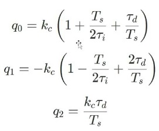

ROS Basics Capstone – Turtlesim Catch Them All
1. Overview
The project is a multi-node ROS 2 application where:
turtlesim_nodeprovides the simulator and built-in services (/spawn,/kill)turtle_spawnerspawns random turtles and manages the list of alive turtlesturtle_controllercontrolsturtle1to chase and catch turtles- Custom interfaces are used to share alive turtle information and request a catch action
This report documents an implementation that was already completed, focusing on how each package, node, topic, and service contributes to the final behavior. The overall goal is to integrate ROS 2 basics (topics, services, custom interfaces, parameters, and launch files) in a single working application.
2. Project objective
Implement a ROS 2 system that repeatedly spawns turtles in turtlesim and makes turtle1 chase them automatically until they are removed.
Main expected features (from the assignment instructions):
- Spawn turtles at random positions
- Publish a list of alive turtles
- Control turtle1 using a feedback controller
- Request capture of a turtle through a custom service
- Use a launch file and YAML parameters to start the system
In practice, this capstone demonstrates a complete control loop:
1. Perception/state update (/turtle1/pose, /alive_turtles)
2. Decision (select nearest turtle)
3. Action (/turtle1/cmd_vel)
4. Task completion request (/catch_turtle)
5. Environment update (remove turtle and republish alive list)
3. System architecture
Nodes
turtlesim_node(fromturtlesim)turtle_spawner(custom, packageer_turtle)turtle_controller(custom, packageer_turtle)
Topics
/turtle1/pose(subscribe in controller)/turtle1/cmd_vel(publish from controller)/alive_turtles(publish from spawner, subscribe in controller)
Services
/spawn(called by spawner)/kill(called by spawner)/catch_turtle(custom service offered by spawner, called by controller)
This architecture separates responsibilities clearly:
- turtle_spawner manages the "world state" of target turtles.
- turtle_controller manages motion control and pursuit behavior.
- turtlesim_node provides the simulation and native turtle management services.
This separation is aligned with the assignment intent: use ROS 2 communication primitives to coordinate independent nodes.
4. Custom interfaces package (er_interfaces_turtle)
This package defines the messages and service used by the controller and spawner.
Custom interfaces are required because the default ROS 2 and turtlesim interfaces do not provide:
- a compact list of all alive turtles with positions (TurtleArray)
- a custom "catch request" semantic (CatchTurtle)
4.1 TurtleIn.msg
Purpose: - Represents a turtle entry in the alive list. - Stores the turtle name and its spawn pose.
Explanation:
- name: turtle name (for example turtle2, turtle3, etc.)
- x, y: turtle position used when spawned
- theta: turtle heading used when spawned
This message is the basic unit used by the spawner to publish tracked turtles and by the controller to choose a target.
4.2 TurtleArray.msg
Purpose: - Publishes all currently alive turtles in one message.
Explanation:
- turtles is an array of TurtleIn
- This topic is published by turtle_spawner and read by turtle_controller
Using a single array message avoids publishing multiple topics or multiple services just to share the current list of targets. It also makes the controller logic simpler because it receives the full set of candidates in one callback.
4.3 CatchTurtle.srv
Purpose: - Requests that one turtle be removed (caught) by name.
Explanation:
- Request:
- name: the turtle to remove
- Response:
- success: whether the request was accepted and processed
This service acts as the bridge between "controller reached target" and "spawner updates the alive list + kills turtle in turtlesim". It keeps the controller focused on motion and the spawner focused on entity management.
4.4 Notes on interface package build files
The interface package must use rosidl_generate_interfaces(...) in CMakeLists.txt and declare the correct dependencies in package.xml (rosidl_default_generators, rosidl_default_runtime, and ament_cmake).
The uploaded interface package.xml identifies the package as:
er_interfaces_turtle
This matches the imports used in the Python nodes:
- from er_interfaces_turtle.msg import ...
- from er_interfaces_turtle.srv import ...
This consistency is important because any mismatch between package name, generated interfaces, and Python imports causes build/import errors.
5. Python nodes package (er_turtle)
This package contains the two custom nodes:
- turtle_spawner
- turtle_controller
It also includes setup.py/setup.cfg for registering executables.
Functionally, this package is where the runtime behavior of the capstone lives: - one node manages target generation/removal - the other node performs guidance and pursuit
5. turtle_spawner.py (Spawner + alive list manager + catch service server)
5.1 Role in the system
MySpawner is responsible for:
- Spawning turtles periodically at random positions using /spawn
- Keeping an internal list of alive turtles
- Publishing that list to alive_turtles
- Exposing catch_turtle service
- Calling /kill when a turtle must be removed
This node acts as the "world manager" for the capstone.
It centralizes the logical state of active targets so the controller does not need to know how turtles are created or removed internally.
5.2 Main ROS interfaces used by turtle_spawner
- Client:
spawn(turtlesim/srv/Spawn) - Client:
kill(turtlesim/srv/Kill) - Publisher:
alive_turtles(er_interfaces_turtle/msg/TurtleArray) - Service server:
catch_turtle(er_interfaces_turtle/srv/CatchTurtle)
The node uses both ROS 2 service client and server roles:
- client role for interacting with turtlesim
- server role for receiving "catch" requests from the controller
This is one of the key integration points of the assignment.
5.3 Important implementation details
Parameters
The node declares and uses:
- spawn_frequency (default 1.25)
- turtle_name_prefix (default "turtle")
These are later configured in the bringup YAML file.
This allows the node behavior to be modified without changing code: - faster/slower spawn rate - different naming conventions
Internal state
cnt_name: starts at2(becauseturtle1already exists in turtlesim)alive_turtlesA: stores the published alive turtle array
Starting at 2 is important because turtlesim_node creates turtle1 automatically, and the spawned turtles are intended to be targets (turtle2, turtle3, ...).
Random spawning
The node generates:
- x in [0.5, 10.5]
- y in [0.5, 10.5]
- theta in [-pi, pi]
These ranges keep spawned turtles inside the visible map region and produce random headings for variety.
Catch service behavior
When catch_turtle is called:
- It calls /kill using the received turtle name
- Removes the turtle from the internal alive list
- Republishes the updated alive_turtles message
Republishing after removal is essential so the controller always works with the current list and can immediately choose a new nearest target.
5.5 Full code (turtle_spawner.py)
#!/usr/bin/env python3
import numpy as np
import rclpy
import random
from rclpy.node import Node
from er_interfaces_turtle.msg import TurtleIn, TurtleArray
from er_interfaces_turtle.srv import CatchTurtle
from turtlesim.srv import Spawn, Kill
from functools import partial
class MySpawner(Node):
def __init__(self):
super().__init__("turtle_spawner") #Only identification
self.client = self.create_client(Spawn,"spawn") #Service type, Service name
self.declare_parameter("spawn_frequency", 1.25) #Declare parameter
self.spawn_frequency_ = self.get_parameter("spawn_frequency").value #Use the parameter
self.create_timer(self.spawn_frequency_, self.t_spawner)
self.declare_parameter("turtle_name_prefix", "turtle") #Declare parameter
self.turtle_name_prefix_ = self.get_parameter("turtle_name_prefix").value #Use the parameter
self.cnt_name = 2
self.alive_turtlesA = TurtleArray()
self.alive_turtles_ = self.create_publisher(TurtleArray, "alive_turtles", 10)
self.catch_turtle_ = self.create_service(CatchTurtle, "catch_turtle", self.call_kill) #Service type, Service name, callback
self.client2 = self.create_client(Kill, "kill") #Service type, Service name
def call_spawn(self, save: TurtleIn):
while not self.client.wait_for_service(timeout_sec=1.0):
self.get_logger().info("Server not available")
request = Spawn.Request()
request.x = float(save.x)
request.y = float(save.y)
request.theta = float(save.theta)
request.name = str(save.name)
future = self.client.call_async(request)
future.add_done_callback(partial(self.add_spawn, request, save))
def add_spawn(self, request, save, future):
try:
response = future.result()
save.name = response.name
self.alive_turtlesA.turtles.append(save)
self.alive_turtles_.publish(self.alive_turtlesA)
self.get_logger().info(f"Spawned requested='{request.name}' returned='{response.name}'")
except Exception as e:
self.get_logger().error(f"Spawn failed for {request.name}: {e}")
def t_spawner(self):
save = TurtleIn()
save.name = self.turtle_name_prefix_ + str(self.cnt_name)
save.x = float(random.uniform(0.5, 10.5))
save.y = float(random.uniform(0.5, 10.5))
save.theta = float(random.uniform(-np.pi, np.pi))
self.call_spawn(save)
self.cnt_name += 1
def kill_la_kill(self, name:str):
while not self.client2.wait_for_service(timeout_sec=1.0):
self.get_logger().info("Server not available")
request = Kill.Request()
request.name = name
self.future = self.client2.call_async(request)
self.future.add_done_callback(partial(self.add_kill, request))
def add_kill(self, request: Kill.Request, future):
try:
future.result()
if self.remove_alive_turtle(request.name):
self.alive_turtles_.publish(self.alive_turtlesA)
self.get_logger().info(f"Kill: {request.name}")
except Exception as e:
self.get_logger().error(f"Kill failed for {request.name}: {e}")
def remove_alive_turtle(self, name: str):
for i, t in enumerate(self.alive_turtlesA.turtles):
if t.name == name:
del self.alive_turtlesA.turtles[i]
return True
return False
def call_kill(self, request: CatchTurtle.Request, response: CatchTurtle.Response):
self.kill_la_kill(request.name)
response.success = True
self.get_logger().info(f"S= {response.success}")
return response
def main(args=None):
rclpy.init(args=args)
node = MySpawner()
rclpy.spin(node)
rclpy.shutdown()
if __name__ == "__main__":
main()
6. turtle_controller.py (Chaser controller + catch service client)
6.1 Role in the system
TurtlePointController:
- Reads turtle1 pose from turtle1/pose
- Reads alive turtles from alive_turtles
- Chooses the nearest turtle as target
- Computes control commands (linear.x, angular.z) to chase it
- Calls catch_turtle when the target is reached
This is the intelligent behavior node of the capstone.
Its main responsibility is not spawning or deleting turtles, but generating motion commands that make turtle1 converge to the active target robustly and repeatedly.
6.2 Control strategy summary
The controller uses:
- A discrete incremental PID for linear speed (distance error)
- A discrete incremental PID for angular speed (heading error)
- Saturation/anti-windup-style clipping for command limits
- Angle wrapping to keep angular error in
[-pi, pi] - A cosine coupling term to reduce orbiting/loops
Control variables:
- Distance error: distance = sqrt((gx-x)^2 + (gy-y)^2)
- Angular error: alpha = wrap_pi(goal_angle - theta)
A goal is considered reached when:
- distance <= pos_tol
At that moment:
- The controller publishes zero velocity
- Resets PID memory
- Calls catch_turtle for the selected turtle name
This behavior matches the assignment goal of autonomous pursuit-and-catch using ROS communication and feedback control.
6.3 Discrete PID (incremental form) used in the code
The implementation is based on an incremental discrete PID form (as coded in IncPid.step()):
Where:
- u[k] is the current control output
- e[k] is the current error
- q0, q1, q2 are coefficients computed from continuous parameters (kc, ti, td) and sample time Ts
The code computes coefficients in set_from_continuous(...) and applies clipping with clip_value(...).
In this implementation:
- one PID instance (self.v_pid) regulates the distance error and generates the linear speed reference
- another PID instance (self.w_pid) regulates the heading error and generates the angular speed command
Additionally, the linear command is multiplied by a cosine term based on alpha, which reduces forward motion when the turtle is not facing the target. This improves turning behavior and reduces circular trajectories around the goal.

6.4 Main tuning/limits in the uploaded implementation
- Sample time:
Ts = 0.05 s - Position tolerance:
0.275 - Linear command limits:
[-12.0, 12.0] - Angular command limits:
[-7.5, 7.5]
Tuned PID values used in code:
- Linear PID: kc=2.25, ti=0.985, td=0.0275
- Angular PID: kc=3.6, ti=0.65, td=0.0245
These values define the response speed and smoothness of the pursuit behavior. The command limits are especially important in turtlesim to prevent excessive velocities that could make the trajectory unstable or visually erratic.
6.6 Full code (turtle_controller.py)
#!/usr/bin/env python3
import numpy as np
import rclpy
from rclpy.node import Node
from geometry_msgs.msg import Twist
from turtlesim.msg import Pose
from er_interfaces_turtle.msg import TurtleArray
from er_interfaces_turtle.srv import CatchTurtle
from functools import partial
#Anti-windup/limits
def clip_value(x, xmin, xmax):
return float(np.clip(x, xmin, xmax))
#Wrap for fast response
def wrap_pi(angle):
return float((angle + np.pi) % (2.0 * np.pi) - np.pi)
class IncPid:
def __init__(self, ts, umin, umax):
self.ts = ts
self.umin = umin
self.umax = umax
#Sample important states
self.e1 = 0.0 # e[k-1]
self.e2 = 0.0 # e[k-2]
self.u1 = 0.0 # u[k-1]
#Discrete coefficients
self.q0 = 0.0
self.q1 = 0.0
self.q2 = 0.0
def set_from_continuous(self, kc, ti=None, td=0.0):
Ts = self.ts
i_term = 0.0
if ti is not None and ti > 0.0:
i_term = Ts / (2.0 * ti)
d_term = 0.0
if td > 0.0:
d_term = td / Ts
#Incremental PID coefficient (discrete)
self.q0 = kc * (1.0 + i_term + d_term)
self.q1 = -kc * (1.0 - i_term + 2.0 * d_term)
self.q2 = kc * d_term
def reset(self, u0=0.0):
self.e1 = 0.0
self.e2 = 0.0
self.u1 = clip_value(u0, self.umin, self.umax)
def step(self, e):
u = self.u1 + self.q0 * e + self.q1 * self.e1 + self.q2 * self.e2
u = clip_value(u, self.umin, self.umax)
#Update past
self.e2 = self.e1
self.e1 = e
self.u1 = u
return float(u)
class TurtlePointController(Node):
def __init__(self):
super().__init__("turtle_controller")
# ===== Sample time =====
self.ts = 0.05
# ===== Tolerances =====
self.pos_tol = 0.275
self.allow_reverse = False #My experiment, it is good for slow responses (kinda funny)
# ===== Command limits =====
self.v_min = -12.0
self.v_max = 12.0
self.w_min = -7.5
self.w_max = 7.5
# ===== Linear PID (distance) =====
self.v_pid = IncPid(ts=self.ts, umin=self.v_min, umax=self.v_max)
self.v_pid.set_from_continuous(kc=2.25, ti=0.985, td=0.0275)
# ===== Angular PID (alpha) =====
self.w_pid = IncPid(ts=self.ts, umin=self.w_min, umax=self.w_max)
self.w_pid.set_from_continuous(kc=3.6, ti=0.65, td=0.0245)
# ===== Current pose =====
self.x = 0.0
self.y = 0.0
self.theta = 0.0
self.pose_ok = False #Not necessary but just to be sure
# ===== Goal point =====
self.gx = 5.4444
self.gy = 5.4444
self.goal_ok = False #Not necessary but just to be sure
self.last_goal = (self.gx, self.gy)
# ===== Current errors =====
self.distance = 0.0 #Distance error
self.alpha = 0.0 #Orientation error
# ===== NAME =====
self.name_kill = ""
# ===== ROS interfaces =====
self.cmd_pub = self.create_publisher(Twist, "turtle1/cmd_vel", 10)
self.create_timer(self.ts, self.control_step)
self.create_subscription(Pose, "turtle1/pose", self.pose_cb, 10)
self.create_subscription(TurtleArray, "alive_turtles", self.goal_cb, 10) #Will be modified
self.client = self.create_client(CatchTurtle,"catch_turtle")
self.last_kill = ""
self.log_counter = 0
self.get_logger().info("turtle_controller is alive")
def callKILL(self, name: str):
while not self.client.wait_for_service(timeout_sec = 1.0):
self.get_logger().info("Server not available")
request = CatchTurtle.Request()
request.name = name
self.future = self.client.call_async(request) #asyncronous request
self.future.add_done_callback(partial(self.add_callKILL, request))
def add_callKILL(self, request: CatchTurtle.Request, future):
response = future.result()
self.get_logger().info(f"S: {response.success} name={request.name}")
def pose_cb(self, msg: Pose):
self.x = float(msg.x)
self.y = float(msg.y)
self.theta = float(msg.theta)
self.pose_ok = True
def goal_cb(self, msg: TurtleArray):
#No turtles
if not msg.turtles:
return
#Just in case, autodestruction
if not self.pose_ok:
return
nearest = min(msg.turtles, key=lambda t: (float(t.x) - self.x) ** 2 + (float(t.y) - self.y) ** 2)
self.name_kill = nearest.name
new_goal = (float(nearest.x), float(nearest.y))
self.gx, self.gy = new_goal
self.goal_ok = True
#Reset PID memory if goal changed noticeably (fast response)
dx = new_goal[0] - self.last_goal[0]
dy = new_goal[1] - self.last_goal[1]
if float(np.hypot(dx, dy)) > 0.05:
self.v_pid.reset()
self.w_pid.reset()
self.last_goal = new_goal
def update_errors(self):
dx = self.gx - self.x
dy = self.gy - self.y
self.distance = float(np.hypot(dx, dy))
if self.distance <= self.pos_tol:
self.alpha = 0.0
return
goal_angle = float(np.arctan2(dy, dx))
self.alpha = wrap_pi(goal_angle - self.theta)
def publish_stop(self):
msg = Twist()
msg.linear.x = 0.0
msg.angular.z = 0.0
self.cmd_pub.publish(msg)
def control_step(self):
if not self.pose_ok or not self.goal_ok:
return
self.update_errors()
#Stop condition (point reached)
if self.distance <= self.pos_tol:
self.publish_stop()
self.v_pid.reset()
self.w_pid.reset()
if self.last_kill != self.name_kill:
self.callKILL(self.name_kill)
self.last_kill = self.name_kill
return
#Angular command
w_cmd = self.w_pid.step(self.alpha)
#Linear command from distance PID
v_pid_out = self.v_pid.step(self.distance)
#Coupling to reduce loops/orbits:
#linear speed decreases if heading error is large
c = float(np.cos(self.alpha))
if self.allow_reverse:
v_cmd = v_pid_out * c
else:
v_cmd = v_pid_out * max(0.0, c)
# Final clamp (after coupling)
v_cmd = clip_value(v_cmd, self.v_min, self.v_max)
w_cmd = clip_value(w_cmd, self.w_min, self.w_max)
# Publish
msg = Twist()
msg.linear.x = float(v_cmd)
msg.angular.z = float(w_cmd)
self.cmd_pub.publish(msg)
# Debug (every ~0.5 s)
self.log_counter += 1
if self.log_counter % 10 == 0:
self.get_logger().info(
f"distance={self.distance:.4f} alpha={self.alpha:.4f} "
f"v={v_cmd:.4f} w={w_cmd:.4f} "
f"goal=({self.gx:.2f},{self.gy:.2f}) "
f"pose=({self.x:.2f},{self.y:.2f},{self.theta:.2f})"
)
def main(args=None):
rclpy.init(args=args)
node = TurtlePointController()
rclpy.spin(node)
rclpy.shutdown()
if __name__ == "__main__":
main()
7. setup.py and setup.cfg (Python package registration)
7.1 Purpose
These files register the executable entry points so ROS 2 can run the Python nodes using:
ros2 run er_turtle turtle_spawnerros2 run er_turtle turtle_controller
This is required for ament_python packages because ROS 2 resolves executable names through the console_scripts declared in setup.py.
7.2 setup.py (uploaded)
from setuptools import find_packages, setup
package_name = 'er_turtle'
setup(
name=package_name,
version='0.0.0',
packages=find_packages(exclude=['test']),
data_files=[
('share/ament_index/resource_index/packages',
['resource/' + package_name]),
('share/' + package_name, ['package.xml']),
],
install_requires=['setuptools'],
zip_safe=True,
maintainer='pingu',
maintainer_email='pingu@todo.todo',
description='TODO: Package description',
license='TODO: License declaration',
extras_require={
'test': [
'pytest',
],
},
entry_points={
'console_scripts': [
'turtle_controller2 = er_turtle.turtle_controller2:main',
'turtle_controller = er_turtle.turtle_controller:main',
'turtle_spawner = er_turtle.turtle_spawner:main'
],
},
)
7.3 setup.cfg (uploaded)
7.4 Notes
- The uploaded
setup.pyincludes an extra entry point: turtle_controller2 = er_turtle.turtle_controller2:main- If
turtle_controller2.pydoes not exist, that entry point should be removed to avoid runtime errors.
For the capstone workflow, the important part is that turtle_spawner and turtle_controller are correctly registered, since both are referenced by the launch file.
8. Bringup package (turtle_bringup)
The bringup package starts the complete application and provides parameters for turtle_spawner.
Using a dedicated bringup package is good practice because it keeps:
- executable node code in one package (er_turtle)
- custom interfaces in another (er_interfaces_turtle)
- system startup/configuration files in a separate package (turtle_bringup)
This improves organization and makes the system easier to reuse and test.
8.1 Launch file (app_launch_turtle.xml)
Purpose:
- Starts turtlesim_node
- Starts turtle_spawner and loads parameters from YAML
- Starts turtle_controller
This file is the entry point for running the full demo in one command, which is one of the key expected outcomes of the capstone.
<launch>
<node pkg="turtlesim" exec="turtlesim_node" />
<node pkg="er_turtle" exec="turtle_spawner">
<param from="$(find-pkg-share turtle_bringup)/config/t_param.yaml" />
</node>
<node pkg="er_turtle" exec="turtle_controller" />
</launch>
8.2 Parameter file (t_param.yaml)
Purpose:
- Configures turtle_spawner parameters from a centralized YAML file
Explanation:
- spawn_frequency: timer period in seconds for spawning new turtles
- turtle_name_prefix: prefix for generated names (turtle2, turtle3, ...)
This keeps runtime tuning outside the source code and matches the assignment requirement of using parameters in a realistic ROS 2 setup.
8.3 Bringup CMakeLists.txt (uploaded)
Purpose:
- Installs the launch/ and config/ directories into the package share directory
This installation step is necessary so ROS 2 can find:
- app_launch_turtle.xml
- t_param.yaml
when executing ros2 launch turtle_bringup app_launch_turtle.xml.
cmake_minimum_required(VERSION 3.8)
project(turtle_bringup)
if(CMAKE_COMPILER_IS_GNUCXX OR CMAKE_CXX_COMPILER_ID MATCHES "Clang")
add_compile_options(-Wall -Wextra -Wpedantic)
endif()
find_package(ament_cmake REQUIRED)
install(DIRECTORY
launch
config
DESTINATION share/${PROJECT_NAME}/
)
ament_package()
9. How the full flow works (step-by-step)
app_launch_turtle.xmlstartsturtlesim_node,turtle_spawner, andturtle_controller.turtle_spawneruses the YAML parameters to set spawn period and name prefix.turtle_spawnerperiodically calls/spawnwith random(x, y, theta).- Every successful spawn is added to the internal
alive_turtleslist and published. turtle_controllerreceives/alive_turtles, selects the nearest turtle as current target.turtle_controllerreads/turtle1/poseand computes velocity commands using the discrete PID logic.- When
turtle1reaches the target (insidepos_tol),turtle_controllercallscatch_turtle. turtle_spawnerreceivescatch_turtle, calls/kill, removes the turtle from the alive list, and republishes the updated list.- The process repeats as new turtles continue spawning.
This sequence directly reflects the intended integration of topics + services + custom interfaces described in the activity.
10. Useful commands (from assignment workflow)
10.1 Type inspection
These commands help verify that: - the expected topics/services exist - the interface types match the implementation
10.2 Interface structure inspection
ros2 interface show er_interfaces_turtle/msg/TurtleIn
ros2 interface show er_interfaces_turtle/msg/TurtleArray
ros2 interface show er_interfaces_turtle/srv/CatchTurtle
ros2 interface show turtlesim/srv/Spawn
ros2 interface show turtlesim/srv/Kill
These commands are especially useful during documentation and debugging because they confirm the exact fields used by the messages/services.
10.3 Verbose connection info
ros2 topic info /alive_turtles -v
ros2 topic info /turtle1/pose -v
ros2 topic info /turtle1/cmd_vel -v
ros2 service info /catch_turtle -v
ros2 service info /spawn -v
ros2 service info /kill -v
Use these commands to validate publishers/subscribers and service clients/servers, which is very helpful to demonstrate that the final graph matches the project architecture.
11. Terminal and results
Video of each node working toguether Demo video
Image of launch .xml file result